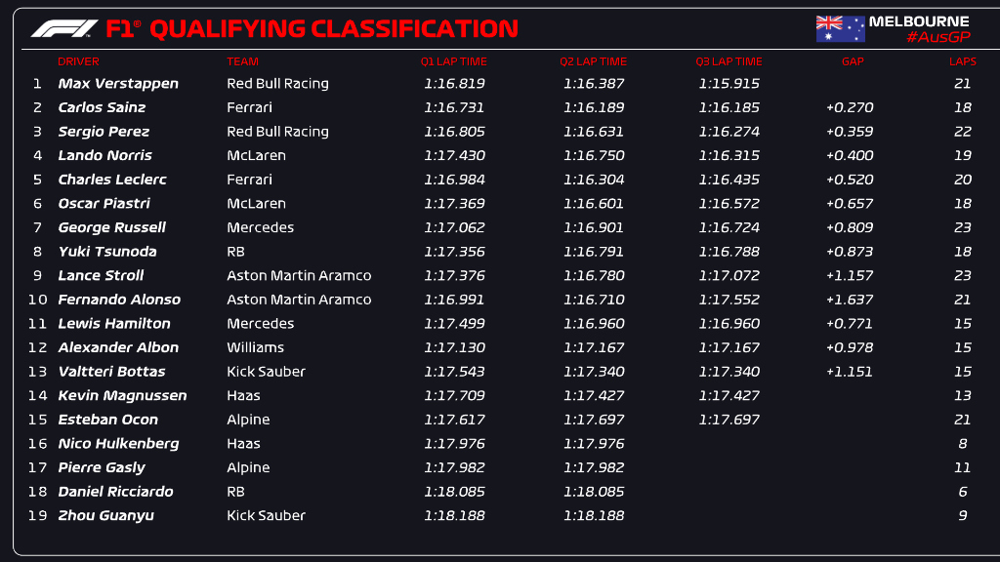
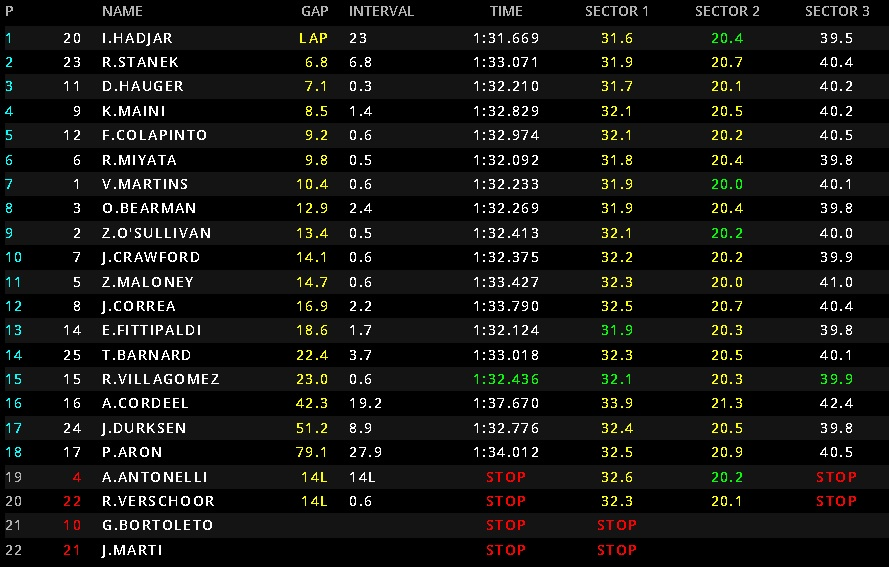
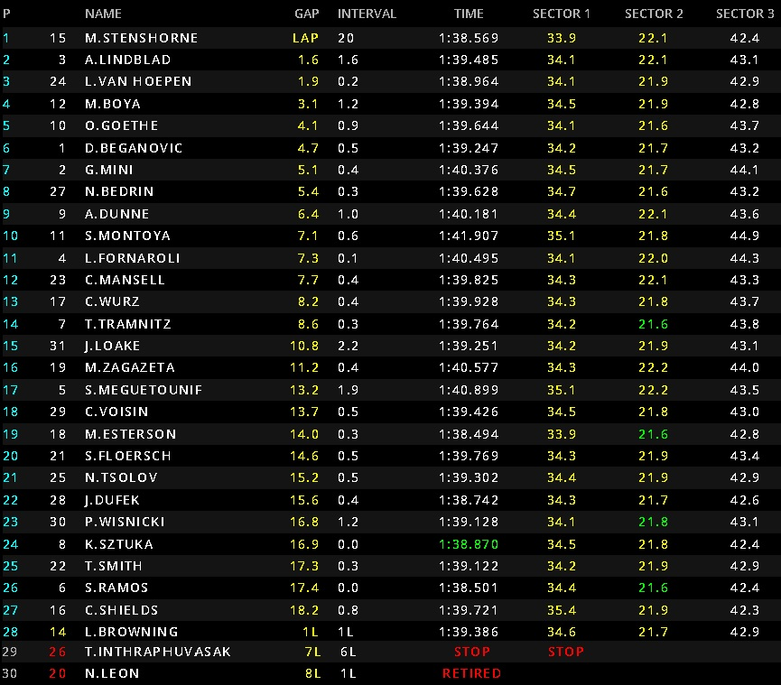

Día 2 del GP Australia
Pole para Max Verstappen con Carlos Sainz segundo entre algodones, Checo Perez saldra 6 por una penalización de 3 puestos por estorbar en Q1 a Hulkenberg. Alonso rompe el suelo en Q3 y no hace una buena Qualy en la que saldra detras de su compañero Stroll.

Stanek se lleva la victoria ante la sanción a Isack Hadjar que acaba 6 por provocar un accidente con su compañero Pepe Marti y Bortoleto en la salida al arrinconarlos y con la colisión de ambos mientras Bearman remonta hasta la 8 posición desde la 16.
Victoria de Stenshorne acompañado de Lindbland y Van Hoepen, Mari Boya 4 con la vuelta rápida y todos los Prema y Campos en los puntos, con Beganovic adelantando a Mini por la 6 posición en linea de meta.

